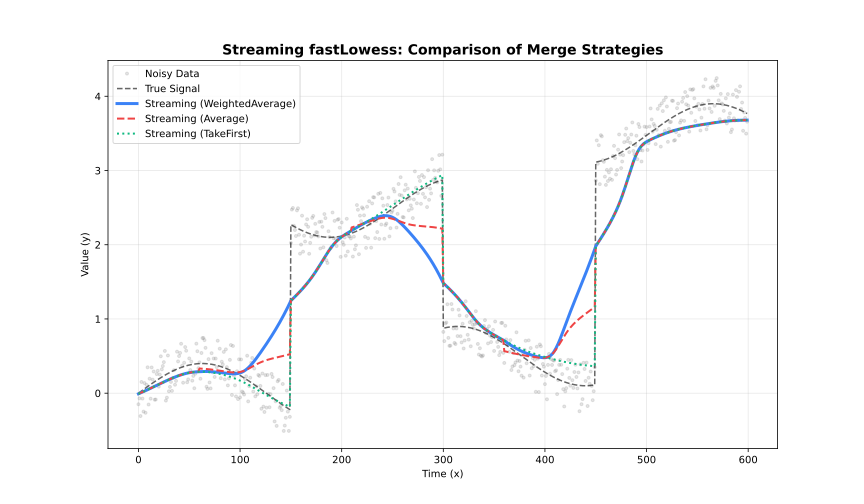

Overview
Streaming LOESS processes data in fixed-size chunks with a configurable overlap. Points inside the overlap zone receive estimates from both adjacent chunks; the merge strategy decides how those two estimates are reconciled.
Chunk A: [=========|=====]
Chunk B: [=====|=========]
Overlap: [=====]| Strategy | Method | Robustness | Speed |
|---|---|---|---|
"average" |
Simple mean of both estimates | Low | Fastest |
"take_first" |
Left-chunk estimate only | Low | Fastest |
"take_last" |
Right-chunk estimate only | Low | Fastest |
"weighted_average" |
Distance-weighted mean | High | Moderate |

Weighted Average (Default)
Assigns each overlap point a weight proportional to its proximity to the centre of its respective chunk: points near the left-chunk centre favour the left estimate; points near the right-chunk centre favour the right. Minimises boundary artefacts.
Use when: Minimising boundary artefacts is more important than speed; moderate overlap (10–20% of chunk size) is used.
library(rfastloess)
set.seed(42)
x <- seq(0, 2 * pi, length.out = 100)
y <- sin(x) + rnorm(100, sd = 0.3)
x_chunk <- x[seq_len(50)]
y_chunk <- y[seq_len(50)]
model <- StreamingLoess(
merge_strategy = "weighted_average",
chunk_size = 5000,
overlap = 500
)
result <- process_chunk(model, x_chunk, y_chunk)Average
Takes the arithmetic mean of the left-chunk and right-chunk estimates in the overlap region. Fast and sufficient when both chunks have similar smoothing quality.
Use when: Chunks are large and the overlap region has uniform data density.
model <- StreamingLoess(
merge_strategy = "average",
chunk_size = 5000,
overlap = 500
)
result <- process_chunk(model, x_chunk, y_chunk)Take First
Keeps only the left-chunk estimate in the overlap zone and discards the right-chunk estimate. Produces a left-flush output.
Use when: You need final output values immediately after each chunk (no look-ahead revision); left-chunk context dominates.
model <- StreamingLoess(
merge_strategy = "take_first",
chunk_size = 5000,
overlap = 500
)
result <- process_chunk(model, x_chunk, y_chunk)Take Last
Keeps only the right-chunk estimate in the overlap zone. The right chunk sees more of the surrounding data, so its estimates can be more accurate in the overlap region.
Use when: Right-chunk context improves overlap quality; you are post-processing complete data rather than streaming in real time.
model <- StreamingLoess(
merge_strategy = "take_last",
chunk_size = 5000,
overlap = 500
)
result <- process_chunk(model, x_chunk, y_chunk)Choosing Chunk Size and Overlap
# Rule of thumb: overlap = fraction * chunk_size
fraction <- 0.3
chunk_size <- 5000
overlap <- ceiling(fraction * chunk_size) # 1500
model <- StreamingLoess(
fraction = fraction,
chunk_size = chunk_size,
overlap = overlap,
merge_strategy = "weighted_average"
)